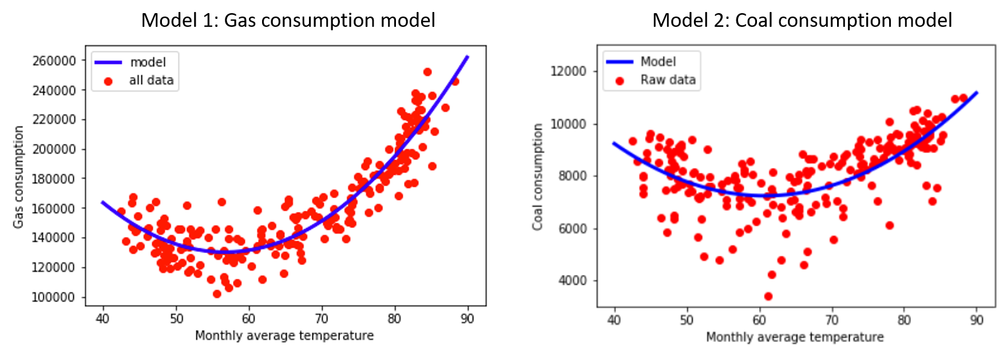

Prediction of natural gas and coal consumption
For Texas
We built a machine learning model to predict gas and coal consumption for Texas.
We studied the correlation of our parameters to determine which variables have
impact on the gas and coal monthly consumption.

Observations:
- Total source = sum of gas, coal and petroleum consumption
- Gas and coal consumption have a good correlation with temperature
- Petroleum, year and population are not correlated to gas and coal consumption
- These parameters are dropped when building our models
Machine learning building
Correlation heatmap suggests that gas and coals consumptions are highly correlated to
temperature.
We first focused on the average monthly temperature to build our models.
- Model 1: Model to predict gas consumption in function of monthly temperature
- Model 2: Model to predict coal consumption in function of monthly temperature
Good correlation between gas and coal consumptions suggests that coal consumption can be used to
refine our model.
We built additional model for gas consumption using temperature and coal consumption.
- Model 3: Model to predict gas consumption in function of monthly temperature and coal
consumption
Model predictions and raw data are shown below for model 1 and 2:

Model performance for model 1 and 2 are:
Model performance for model 3:
Observations:
- Perfomance increase when additional parameters are taken in account
- Accuracy is high and greater than 89%.
Proposed Workflow
Our models predict gas and coal consumptions using the monthly temperature.
Coarse estimates are computed from model 1 and 2.
Then, the predicted coal is inputted to model 3 to refine the monthly gas
consumption.